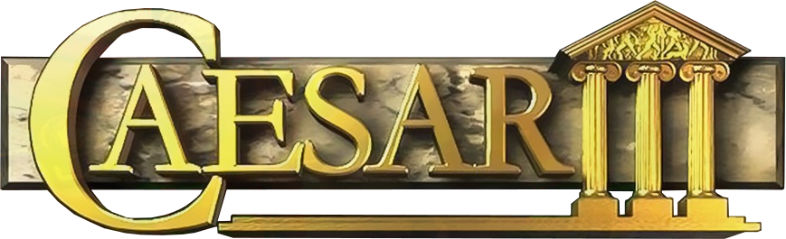

Caesar III
Caesar III is a city-building game from 1998, a part of City Building series (others are Pharaoh/Cleopatra, Zeus/Poseidon, and Emperor). Players take on the role of a Roman governor, tasked with building up a grand Roman city, in which they must ensure their citizens have their needs met, that their city is safe and profitable, while meeting various goals set for them and dealing with various disasters, angry gods and hostile enemies.
Augustus
Augustus is currently (2020-24) developed project that provides enhanced, customizable gameplay to Caesar III, which include (besides fixing various bugs): roadblocks, global labor pool, zoom controls, monument construction, and more! Augustus is the reason that Caesar III, despite being the first entry in the series (leaving aside Caesar II), is arguably the best. Current Augustus version is 4.0.0 from 28th December 2023.
PDF Documents
Other Caesar III sites